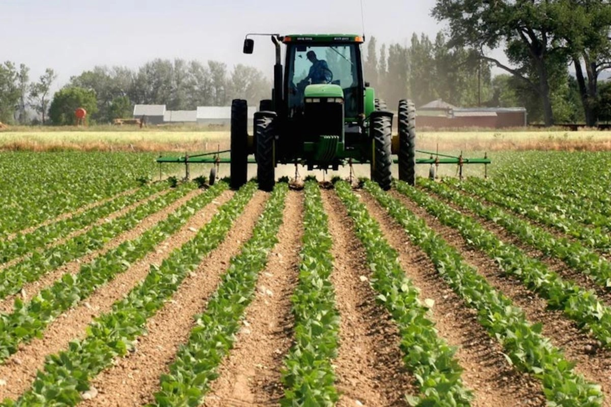

FG targets 600 farmers for N180 million interest-free loans in Niger State

The Federal Government and Niger State Government plan to provide N300,000 interest-free loans to 600 small-scale farmers, a potential total disbursement of N180 million. The initiative is being delivered through FarmerMoni, part of the Government Enterprise and Empowerment Programme (GEEP) under the National Social Investment Programme Agency (NSIPA).
GEEP National Programme Manager Hamza Baba announced the plan in Minna during the start of a beneficiary enumeration exercise and training for desk officers from the state’s 25 local government areas. He said the loans are intended to help farmers buy agricultural inputs, expand production and improve their livelihoods.
Each loan is repayable within one year, with repayments expected to begin six months after farming activities commence. The intervention covers crop cultivation, poultry, livestock, fisheries and aquaculture. Officials will identify, register and verify applicants to help ensure that funds go to active farmers.
Baba said GEEP would work with the All Farmers Association of Nigeria, the Agricultural Development Programme and local government officials to monitor how loans are used and repaid. Niger State Commissioner for Humanitarian Affairs and Disaster Management Ibrahim Inga said the programme would complement existing poverty-reduction efforts, while stressing the importance of transparency and reaching genuine farmers.
Special Adviser to the Governor on Social Investment Programme Hauwa Mohammed said desk officers had received tablets to record farmers’ details and farmland locations. The digital process, she said, is intended to prevent fictitious beneficiaries from obtaining loans.
Source: Nairametrics